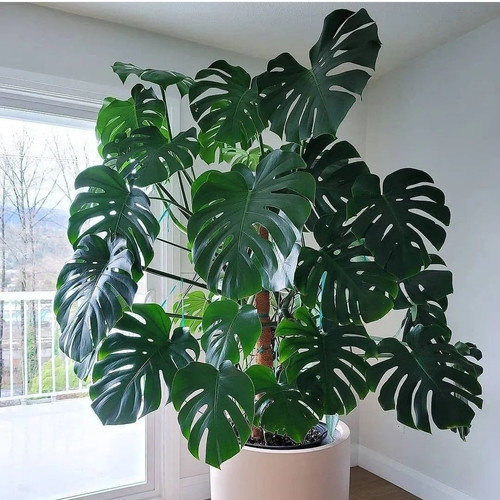
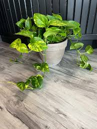
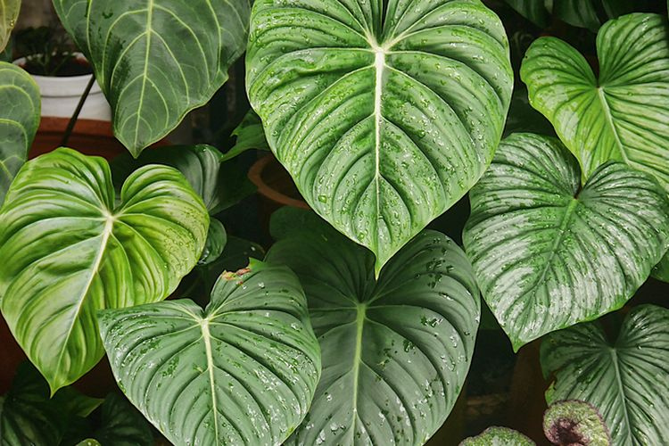

Panduan Tanaman Hias
Monstera Deliciosa: Keindahan Tropis dalam Rumah Anda

Monstera Deliciosa, juga dikenal sebagai Swiss Cheese Plant, adalah tanaman hias yang mempesona dengan daun-daun besar dan berlubang. Tanaman ini tidak hanya membawa nuansa tropis ke dalam rumah Anda, tetapi juga dikenal karena kemampuannya membersihkan udara.
Pernahkah Anda mendengar bahwa Monstera Deliciosa menghasilkan buah yang bisa dimakan? Di habitat aslinya, buah ini dikenal sebagai "Ceriman" dan rasanya seperti campuran nanas dan pisang!
Fakta Menarik: Monstera Deliciosa berasal dari hutan hujan Amerika Tengah dan bisa tumbuh sangat besar di alam liar!
Pencahayaan: Cahaya terang tapi tidak langsung adalah yang terbaik untuk Monstera. Terlalu banyak sinar matahari langsung bisa membakar daunnya yang indah.
Penyiraman: Siram ketika lapisan atas tanah kering. Pastikan pot memiliki drainase yang baik untuk menghindari akar busuk.
Pemupukan: Pemupukan bulanan selama musim tanam akan memastikan Monstera Anda tumbuh subur dan sehat.
Tips Khusus: Monstera suka kelembapan. Menyemprot daunnya secara berkala dengan air bisa membantu meniru kondisi habitat aslinya.
Penyakit: Akar busuk bisa menjadi masalah jika terlalu sering disiram.
Penanganan Penyakit: Jika Anda melihat tanda-tanda akar busuk, potong bagian yang busuk dan tanam kembali di tanah yang kering dan berdrainase baik. Gunakan fungisida jika diperlukan.
Lidah Mertua: Tanaman Tahan Banting dengan Gaya

Lidah Mertua, atau Sansevieria, adalah salah satu tanaman hias yang paling mudah dirawat. Tanaman ini tidak hanya cantik dengan daunnya yang menjulang tinggi, tetapi juga sangat toleran terhadap berbagai kondisi.
Nama "Lidah Mertua" konon berasal dari bentuk daunnya yang tajam, seolah-olah melambangkan ucapan yang tajam dari seorang mertua!
Fakta Menarik: Lidah Mertua adalah salah satu tanaman yang direkomendasikan NASA untuk meningkatkan kualitas udara di dalam ruangan.
Pencahayaan: Dapat tumbuh baik di cahaya terang maupun rendah, menjadikannya pilihan sempurna untuk hampir semua sudut rumah Anda.
Penyiraman: Siram ketika tanah benar-benar kering. Lidah Mertua sangat tahan terhadap kekeringan.
Pemupukan: Pupuk sebulan sekali selama musim tumbuh akan cukup untuk menjaga kesehatan tanaman ini.
Tips Khusus: Hindari penyiraman berlebihan karena dapat menyebabkan busuk akar.
Penyakit: Busuk akar adalah satu-satunya masalah yang perlu diwaspadai.
Penanganan Penyakit: Potong bagian akar yang busuk dan tanam kembali di tanah yang kering dan berdrainase baik. Gunakan fungisida jika diperlukan.
Pothos: Tanaman yang Tumbuh dengan Mudah dan Menawan

Pothos, juga dikenal sebagai Devil's Ivy, adalah tanaman hias yang terkenal karena keindahan daun hijau mengkilapnya dan kemampuannya untuk tumbuh dengan cepat di hampir semua kondisi.
Pothos dikenal sebagai tanaman yang bisa membantu membersihkan udara dari polutan seperti formaldehida dan benzena!
Fakta Menarik: Pothos sangat mudah dirawat sehingga sering disebut sebagai tanaman "mustahil mati".
Pencahayaan: Tumbuh baik di cahaya rendah hingga terang tidak langsung. Pothos sangat toleran terhadap berbagai kondisi cahaya.
Penyiraman: Siram ketika tanah bagian atas mulai mengering. Jangan biarkan tanah terlalu basah.
Pemupukan: Pupuk sebulan sekali pada musim semi dan musim panas untuk mendukung pertumbuhan optimal.
Tips Khusus: Gunting bagian batang untuk merangsang pertumbuhan cabang baru dan membuat tanaman lebih rimbun.
Penyakit: Jamur daun dapat menjadi masalah jika terlalu lembap.
Penanganan Penyakit: Pangkas bagian daun yang terinfeksi dan gunakan fungisida yang sesuai.
Philodendron: Tanaman Hias yang Elegan dan Mudah Dirawat

Philodendron adalah tanaman hias klasik yang telah menjadi favorit banyak orang karena daunnya yang besar dan cantik serta perawatannya yang mudah.
Philodendron juga dikenal sebagai tanaman yang mampu meningkatkan kualitas udara di dalam ruangan dengan menyerap racun dari udara.
Fakta Menarik: Philodendron berasal dari hutan hujan Amerika Selatan dan memiliki lebih dari 400 spesies!
Pencahayaan: Cahaya terang tidak langsung atau sedang. Philodendron juga bisa tumbuh baik di tempat dengan cahaya rendah.
Penyiraman: Biarkan tanah mengering sebagian antara penyiraman untuk menghindari akar busuk.
Pemupukan: Beri pupuk setiap 4-6 minggu selama musim tumbuh untuk memastikan tanaman mendapatkan nutrisi yang cukup.
Tips Khusus: Gunakan pot yang besar agar akar dapat berkembang dengan baik dan tanaman bisa tumbuh lebih subur.
Penyakit: Penyakit bercak daun bisa terjadi jika kondisi terlalu lembap.
Penanganan Penyakit: Gunakan fungisida dan pangkas daun yang terinfeksi untuk mencegah penyebaran penyakit.
Fiddle Leaf Fig (Ficus lyrata): Tanaman Trendy dengan Daun Indah

Fiddle Leaf Fig adalah tanaman hias yang sangat populer di kalangan pecinta tanaman. Daunnya yang besar dan berbentuk biola membuatnya menjadi pusat perhatian di setiap ruangan.
Fiddle Leaf Fig sering disebut sebagai tanaman "Instagrammable" karena keindahannya yang fotogenik!
Fakta Menarik: Fiddle Leaf Fig berasal dari Afrika Barat dan dapat tumbuh hingga setinggi 12-15 meter di habitat aslinya!
Pencahayaan: Cahaya terang tidak langsung adalah yang terbaik untuk Fiddle Leaf Fig. Hindari cahaya matahari langsung yang bisa membakar daunnya.
Penyiraman: Biarkan tanah mengering di antara penyiraman untuk menghindari busuk akar.
Pemupukan: Pupuk sebulan sekali pada musim semi dan musim panas untuk memastikan tanaman tumbuh subur dan sehat.
Tips Khusus: Pindahkan pot secara berkala agar semua sisi tanaman mendapatkan cahaya yang cukup, ini akan membantu pertumbuhan yang seimbang.
Penyakit: Bercak daun coklat bisa terjadi jika tanaman terlalu sering disiram atau terkena sinar matahari langsung.
Penanganan Penyakit: Pangkas daun yang terinfeksi dan pastikan tanah tidak terlalu basah. Gunakan fungisida jika perlu.
Spider Plant (Chlorophytum comosum): Tanaman Gantung yang Menawan

Spider Plant adalah tanaman hias yang sangat mudah dirawat dan dikenal karena daunnya yang panjang dan melengkung serta anakan yang menjuntai seperti laba-laba.
Spider Plant sering digunakan sebagai tanaman hias gantung karena anakan yang menjuntai memberikan efek estetika yang indah!
Fakta Menarik: Spider Plant adalah salah satu tanaman terbaik untuk membersihkan udara di dalam ruangan dari polutan seperti formaldehida dan xilena.
Pencahayaan: Cahaya terang tidak langsung atau sedang. Spider Plant juga toleran terhadap cahaya rendah.
Penyiraman: Siram ketika tanah mulai mengering. Jangan biarkan tanah terlalu basah untuk menghindari busuk akar.
Pemupukan: Beri pupuk setiap 2-4 minggu selama musim tumbuh untuk mendukung pertumbuhan optimal.
Tips Khusus: Pangkas anakan secara berkala untuk mendorong pertumbuhan lebih banyak tanaman baru.
Penyakit: Hama kutu putih bisa menjadi masalah jika tanaman terlalu lembap.
Penanganan Penyakit: Bersihkan tanaman dengan air sabun atau gunakan insektisida yang sesuai untuk mengatasi hama.
Peace Lily (Spathiphyllum): Keanggunan yang Damai di Setiap Sudut Rumah

Peace Lily adalah tanaman hias yang elegan dengan bunga putih yang indah.Tanaman ini juga terkenal karena kemampuannya untuk membersihkan udara dari polutan berbahaya.
Peace Lily sering diberikan sebagai simbol perdamaian dan harmoni, menjadikannya hadiah yang indah untuk orang terkasih!
Fakta Menarik: Peace Lily adalah salah satu tanaman hias yang paling efektif dalam menyerap racun seperti amonia dan benzena dari udara.
Pencahayaan: Cahaya rendah hingga sedang. Peace Lily sangat cocok ditempatkan di area dengan cahaya yang tidak terlalu terang.
Penyiraman: Jaga tanah tetap lembap tetapi tidak basah. Peace Lily tidak suka tanah yang terlalu kering atau terlalu basah.
Pemupukan: Beri pupuk setiap 6-8 minggu selama musim tumbuh untuk mendukung pertumbuhan dan pembungaan.
Tips Khusus: Tempatkan di kamar mandi atau area lembap untuk mendukung pertumbuhan dan menjaga daun tetap segar.
Penyakit: Daun menguning bisa terjadi jika tanaman terlalu sering disiram atau terkena cahaya matahari langsung.
Penanganan Penyakit: Pastikan tanaman mendapatkan cukup cahaya tetapi tidak langsung terkena sinar matahari. Periksa kelembapan tanah dan gunakan insektisida jika terinfeksi serangga.
ZZ Plant (Zamioculcas zamiifolia): Tahan Banting dan Menawan

ZZ Plant adalah tanaman hias yang sangat tahan banting dan dapat tumbuh baik di berbagai kondisi cahaya dan kelembapan.Tanaman ini dikenal karena daunnya yang tebal dan mengkilap.
ZZ Plant sering disebut "Zanzibar Gem" karena asalnya dari Afrika Timur dan tampilan daunnya yang seperti permata!
Fakta Menarik: ZZ Plant adalah salah satu tanaman hias yang paling tahan terhadap kekeringan, membuatnya ideal untuk mereka yang sering lupa menyiram tanaman!
Pencahayaan: Cahaya terang hingga rendah. ZZ Plant sangat toleran terhadap berbagai kondisi cahaya.
Penyiraman: Biarkan tanah benar-benar kering antara penyiraman. ZZ Plant lebih suka kondisi kering daripada basah.
Pemupukan: Pupuk setiap 2-3 bulan selama musim tumbuh untuk mendukung kesehatan tanaman.
Tips Khusus: ZZ Plant dapat tumbuh baik di pot yang kecil, jadi tidak perlu sering-sering dipindahkan ke pot yang lebih besar.
Penyakit: Akar busuk bisa terjadi jika tanaman terlalu sering disiram.
Penanganan Penyakit: Pastikan tanah mengering sepenuhnya antara penyiraman dan gunakan fungisida jika diperlukan.